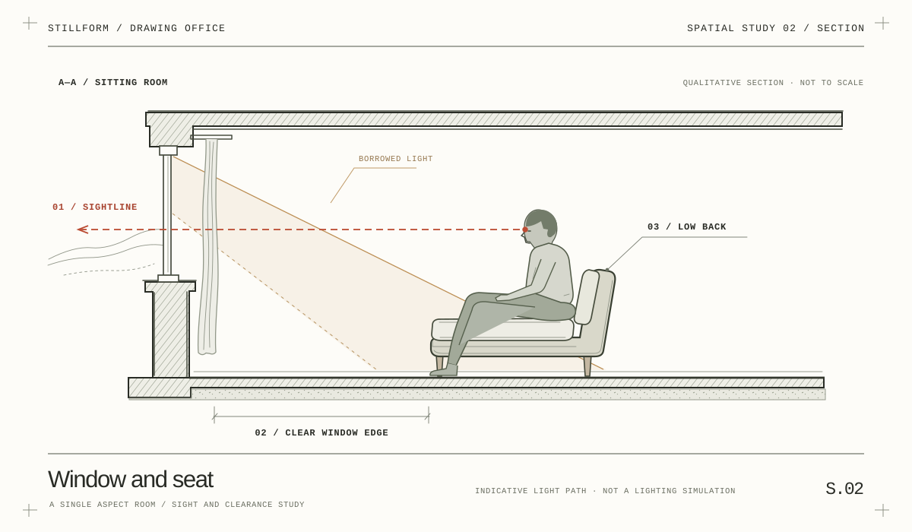
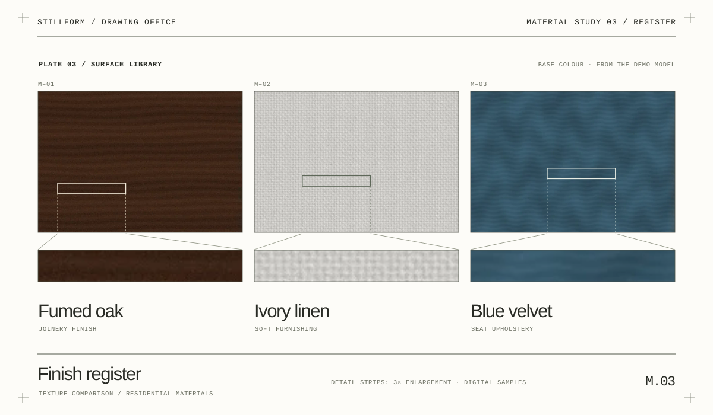

設計研究
02 採光剖面
窗邊的座位
只有一面窗的起居室，梳化不宜貼着玻璃。座位退後，窗簾前便有位置拉簾和清潔；低椅背亦不會遮住坐着時的視線。
- 圖上覆核
- 先看坐姿視線會否被窗台截斷，再看梳化靠背有沒有擋住室內往窗外的視線。
- 仍需核實
- 窗台高度、座面高度和傢俬後方的淨空，須以現場尺寸及最終選型確認。

03 物料對照
飾面與接觸面
把煙燻橡木、象牙色亞麻和藍色絨布放在同一張圖上。木紋要看紋路方向，亞麻看編織疏密，絨布則要轉換視角比較反光。
- 模型覆核
- 由房間全景走近傢俬，檢查紋理的比例，以及粗糙面和反光面的分界。
- 選材前
- 以實物樣板對色，另行確認觸感、清潔方式及耐用程度。
